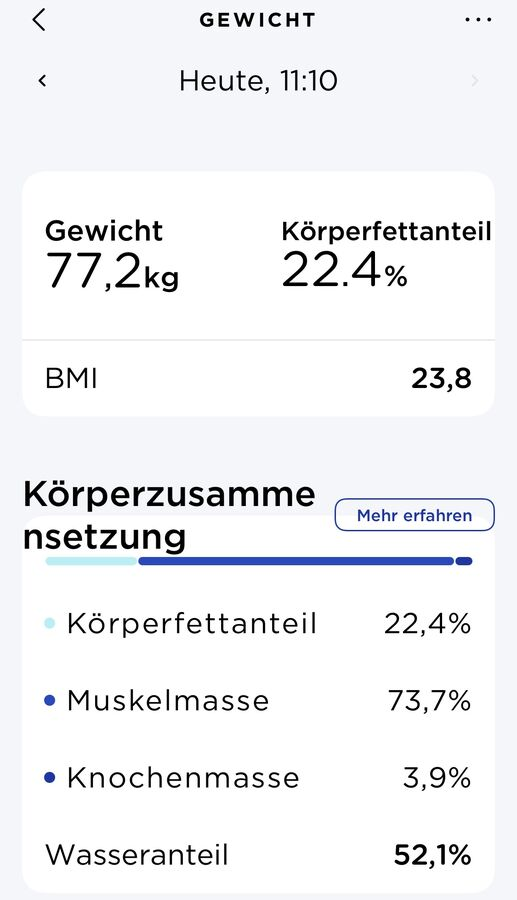

Bugün, yola çıkış gününde, kendimi bir kez daha tarttım.
77,2 kilo iyi. %22,4 vücut yağ oranı pek harika değil ama şimdiye kadarkinden daha iyi.
Seyahatten sonra oranın nasıl olacağını gerçekten merak ediyorum.

17 Nisan 2022
Bugün, yola çıkış gününde, kendimi bir kez daha tarttım.
77,2 kilo iyi. %22,4 vücut yağ oranı pek harika değil ama şimdiye kadarkinden daha iyi.
Seyahatten sonra oranın nasıl olacağını gerçekten merak ediyorum.
